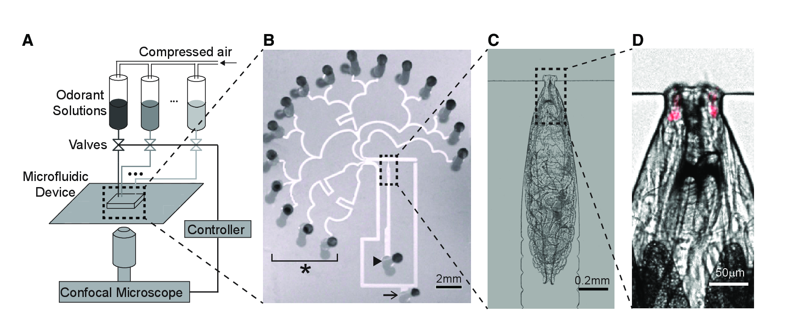
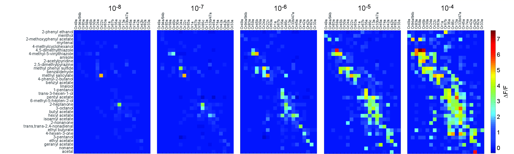
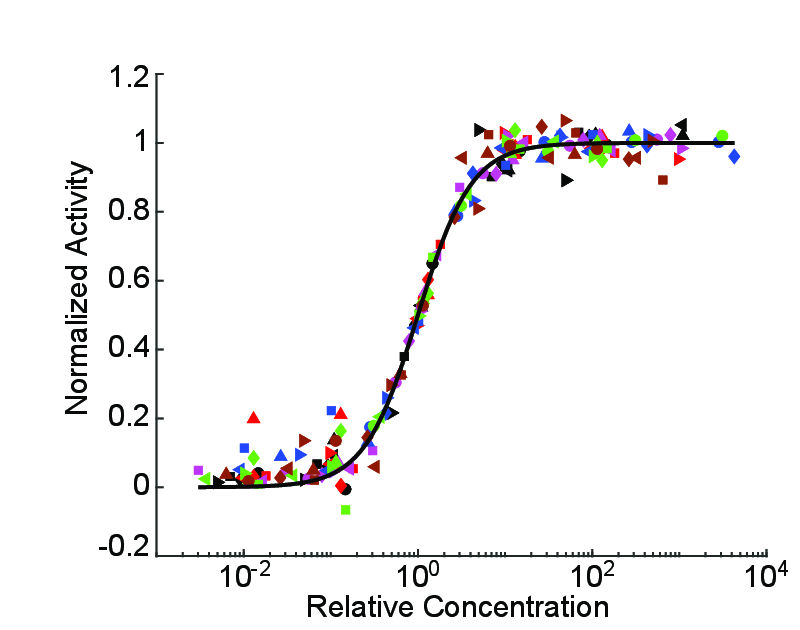
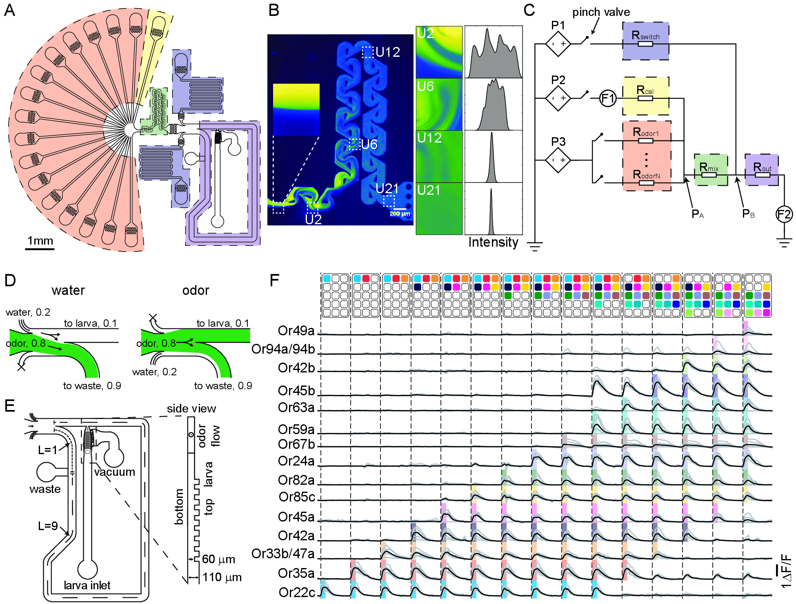
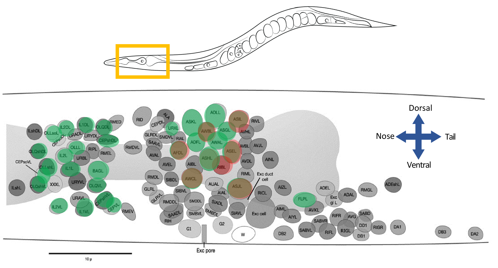
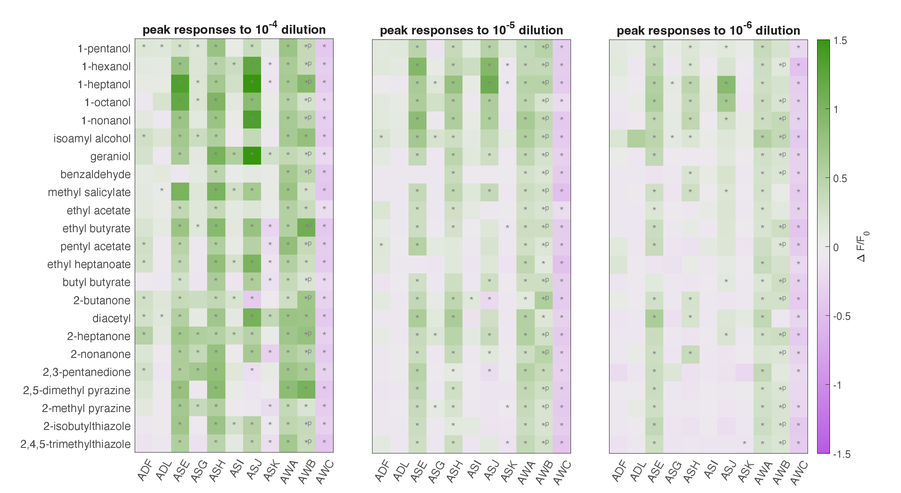
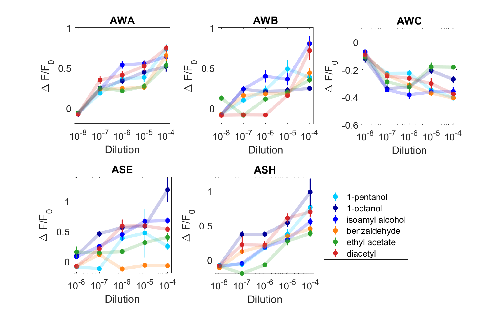
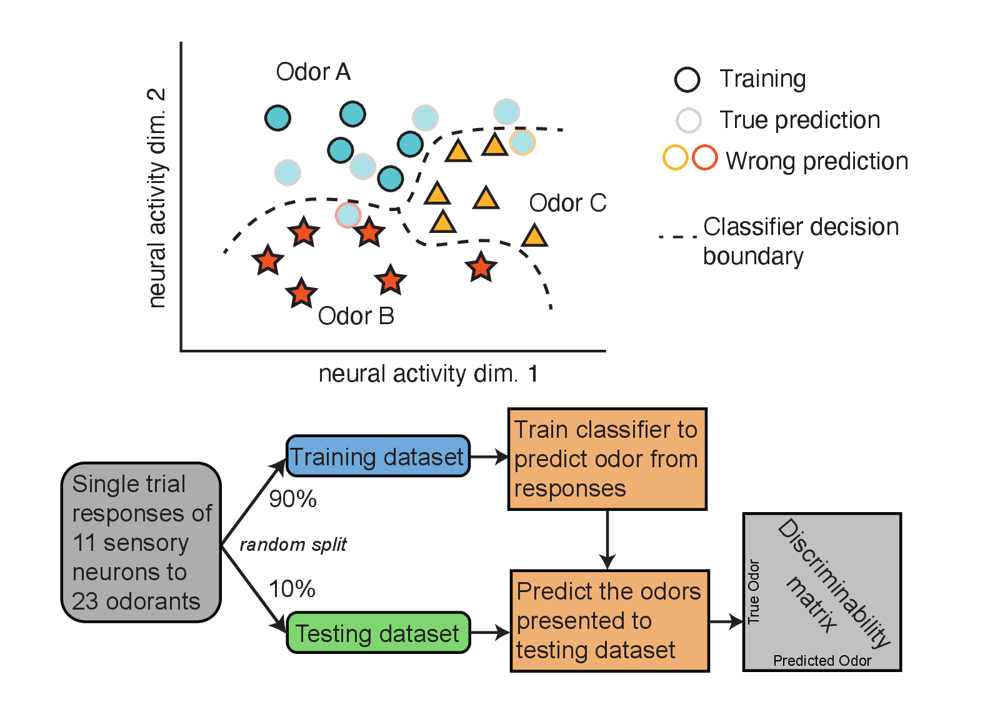
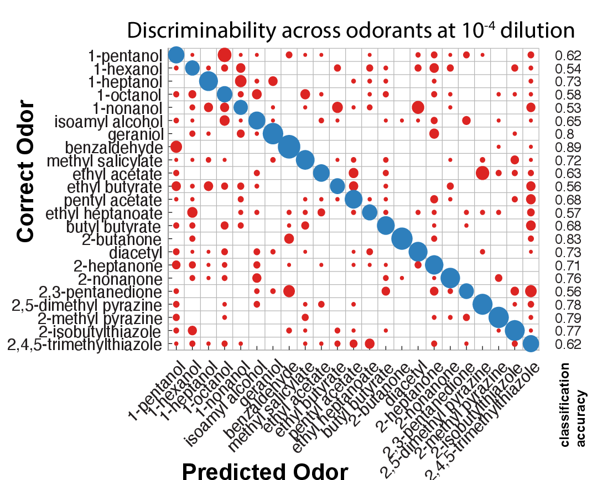
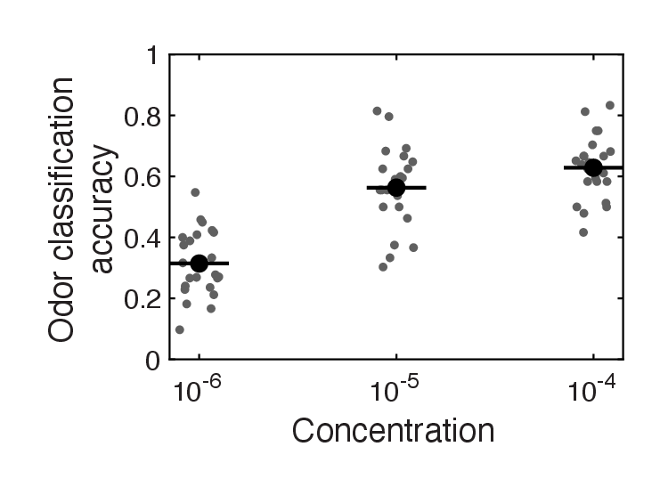

https://bit.ly/JaneliaADTS2023
Olfaction

Howard Berg (1934-2021)
E. coli
Tracking cells

If life is getting better, enjoy it more.
If life is getting worse, don't worry about it.
An olfactory circuit

Higher dimensional olfactory representations in small brains?
Witvliet et al. (2021)
Winding et al. (2023)
Low-dimensionality in worm navigation
and low-dimensionality in larval navigational
High-dimensionality in whole brain recording during behavior
Low-dimensional behavior → Low-dimensional brain

Venkatachalam et al. (2016)
Courtship behavior is high-dimensional
High-dimensional behavior → high-dimensional brain


Susoy et al. (2021)
High-dimensional olfactory stimulation
Si, Kanwal et al. (2019)
High-dimensional coding of odor identity and intensity
One neuron, one receptor → Same shaped dose-response curves
A finger on every key of the olfactory piano
Si, Baron et al., in preparation
High-dimensional olfactory imaging in C. elegans
High-dimensional coding of odor identities and intensities
One neuron, many receptors → differently shaped dose-response curves
 Low-dimensional visual representation
of high dimensional olfactory representation
Do high-dimensional olfactory representation support discrimination?
Do high-dimensional olfactory representation support discrimination?
Yes
Do high-dimensional olfactory representation support discrimination?
Yes
Does the brain represent high-dimensional olfactory information?
I don't know
Helena Casademunt, Harvard
Kevin Chen, Princeton
Acknowledments
Samuel Lab
Vlad Susoy
Core Park
David Zimmerman
Helena Casademunt
Stan Lazopulo
Alina Vrabiou
Gabriel Hosu
Zhen Lab
Dr. Daniel Witvliet
Dr. Ben Mulcahy
Min Wu
Dr. Wesley Hung
Alumni
Prof. Damon Clark, Yale
Prof. Andrew Leifer, Princeton
Prof. Vivek Venkatachalam,
Northeastern Univ
Prof. Sahand Jamal, EPFL
Prof. Quan Wen, USTC
Prof. Guangwei Si, Beijing
Prof. Ni Ji, Beijing
Dr. Albert Lin, Princeton
Dr. James Mitchell, Harvard

"Is this knowledge practical? The reading of the external environment by cells of all types, leading to responses in growth or motility, is fundamental to life. Bacterial chemotaxis provides a model for learning how such processes can work. However this is not what has motivated me."
Acknowledments
Samuel Lab
Vlad Susoy
Core Park
David Zimmerman
Helena Casademunt
Stan Lazopulo
Alina Vrabiou
Gabriel Hosu
Zhen Lab
Dr. Daniel Witvliet
Dr. Ben Mulcahy
Min Wu
Dr. Wesley Hung
Alumni
Prof. Damon Clark, Yale
Prof. Andrew Leifer, Princeton
Prof. Vivek Venkatachalam,
Northeastern Univ
Prof. Sahand Jamal, EPFL
Prof. Quan Wen, USTC
Prof. Guangwei Si, Beijing
Prof. Ni Ji, Beijing
Dr. Albert Lin, Princeton
Dr. James Mitchell, Harvard
"... I have wanted to know, simply, how such a tiny creature does its thing. How, for example, has it solved the problem of finding greener pastures within the constraints imposed by physics? This is a matter of curiosity. Curiosity is the driving force of basic science."